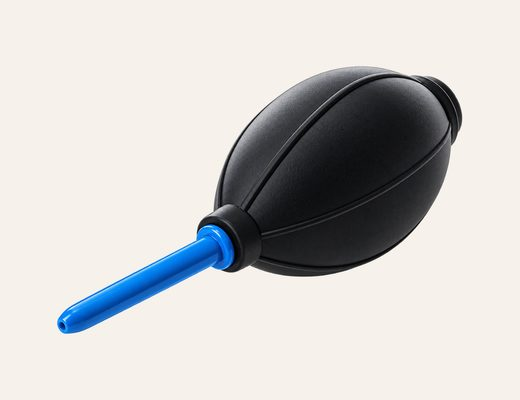
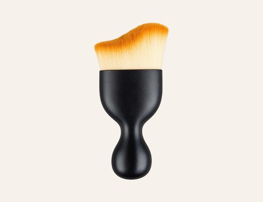
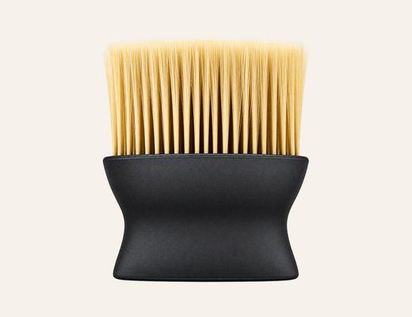
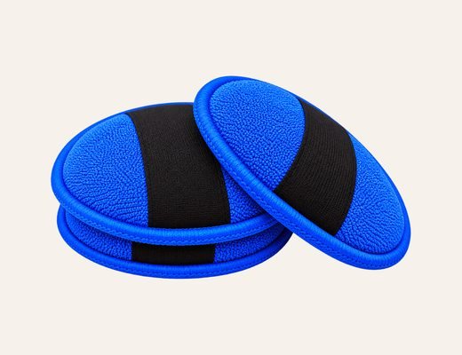

Air Blower
Hold a hand air-blower 4–6 cm from the surface and use short, gentle bursts to lift dust from ridges and crevices — without touching the artwork.
Textured surface · every month
Handcrafted surfaces are made to last a lifetime. Preserving the art of elegance, crafted to be admired and preserved to endure. A few gentle habits — and the right four tools — will keep your artwork as it was on the day it arrived.

Hold a hand air-blower 4–6 cm from the surface and use short, gentle bursts to lift dust from ridges and crevices — without touching the artwork.
Textured surface · every month

Delicate care for sculpted textures. Gently brush across the textured surface to remove accumulated dust, preserving relief, dimensional details and refined finish.
Textured surface · every month

Where appropriate, a hard brush can clear settled dust from frame corners and mouldings. Keep it strictly away from the artwork surface.
Frame corners · every month

Use a clean, dry microfiber cloth to wipe the frame in one direction. Never apply water, sprays or polish to the frame or the artwork surface.
Frame only · every month